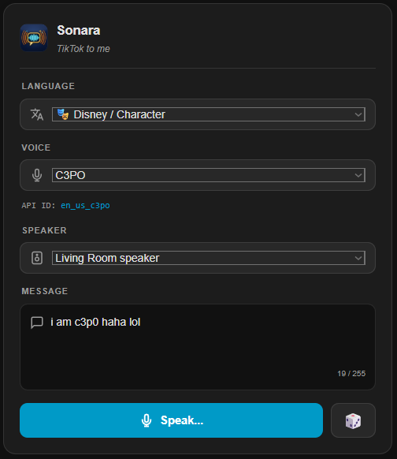

106 narrator, character and singing voices in 16 language groups. Use them in any tts.speak automation, or try them on the built-in dashboard voice bench.
A standard Home Assistant TTS engine, plus shared helper entities and a card so nobody has to write templates.
US, UK and Australian English, characters, singing voices, French, Italian, Spanish, German, Portuguese, Indonesian, Japanese, Korean and Vietnamese.
Pick a language, a voice and a speaker, type a line and press Speak. The card registers itself, so you only add type: custom:sonara-card.
Pass voice: random and Sonara picks from the language groups you chose. The pool survives restarts.
Setup and Configure check the endpoint or session before saving, so mistakes show up right away instead of in a silent automation.
Two retries per request. In direct mode Sonara also falls through the other regional endpoints and splits long text into chunks.
When TikTok rejects your session cookie, a repair issue tells you exactly where to paste a fresh one.

Pick a language, a voice and a speaker, type a line and press Speak. The 🎲 button rolls a random voice. The card registers itself, so all you add is:
type: custom:sonara-cardThe type: module entry under Dashboards, Resources is added automatically. It is not card config.
106 voices in 16 groups. Use the code with voice:, or pass random.
🇺🇸 English (US) · 24
Jessie, Story Teller, Granny, Santa
🎭 Disney / Character · 9
C3PO, Stormtrooper, Scream, Stitch
🎵 Music / Singing · 15
Caroler, Opera, Pop Lullaby, Hypetrain
🇯🇵 Japanese · 20
Miho, Keiko, Sakura and more
🇬🇧 English (UK) · 8 · 🇦🇺 AU · 2
Narrator, Alfred, Mr. Meticulous, Metro
🇪🇸 🇲🇽 Spanish · 6
Alejandra, Mariana, Álex, Super Mamá
🇧🇷 🇵🇹 Portuguese · 8
Ivete Sangalo, Júlia, Laizza, Galvão Bueno
🇫🇷 🇮🇹 🇩🇪 🇮🇩 🇰🇷 🇻🇳 · 14
French, Italian, German, Indonesian, Korean, Vietnamese
sonara.speakMessage, players and an optional voice. Sonara finds the TTS entity for you and leaves the dashboard selects alone.
action: sonara.speak
data:
message: "Someone is at the front door."
media_player_entity_id: media_player.living_room
voice: en_us_stormtrooperNo account needed. Uses the open-source proxy by Weilbyte. Self-host it for better reliability and paste your URL.
POST {endpoint}/api/generation
Uses TikTok's unofficial speech API with the sessionid cookie from your browser. The cookie expires, the API can change, and using it may violate TikTok's Terms of Service. Use at your own risk.
POST {endpoint}/media/api/text/speech/invoke/
One TTS entity per connection, and one shared set of helpers for dashboards and scripts.
action: tts.speak
target:
entity_id: tts.sonara_proxy
data:
media_player_entity_id: media_player.kitchen
message: "The washing machine is done."
options:
voice: en_us_ghostfaceEntities
HACS custom repository, then a restart.
https://github.com/DonTranQuiL/sonaraSonara uses a new domain, so remove the old tiktoktts integration and add Sonara again. Entity IDs become *.sonara_* and the card becomes custom:sonara-card. Voice codes are unchanged.
Full checklist in the README.